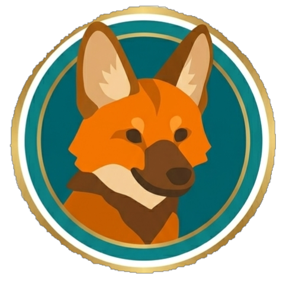

Lobo-guará Tech
Início
Sobre
Nossa Solução
FAQ
Integrantes
Contato
Perguntas Frequentes
O que é a Lobo-guará Tech?
Como funciona o sistema de medalhas mensais?
O projeto é focado apenas no cerrado brasileiro?
Quais tecnologias foram usadas no desenvolvimento?